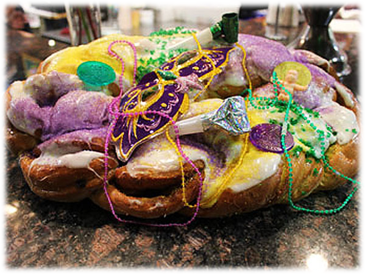
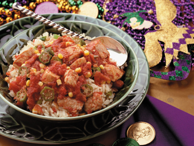
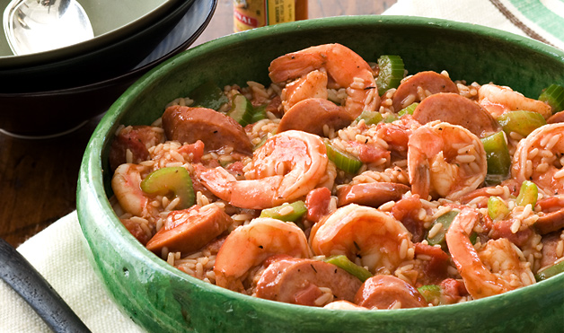
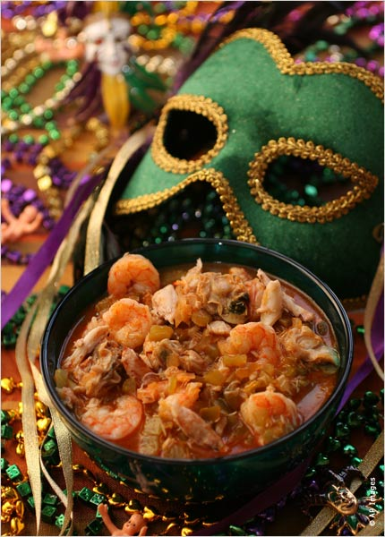

Delicious Foods!
There are many foods that are very known and a tradition in Mardi Gras. Here are some of the many different foods you don't want to miss out on while at Texas Mardi Gras!
~King Cake~
Sweet dough twisted and shaped into an oblong
heavily decorated with icing and sugar crystals.

Below are also a few tasty dishes that you will definitely want to try!

~Gumbo~
Mardi Gras is not complete without
Gumbo, so make sure to try this
famous and delicious dish!!
